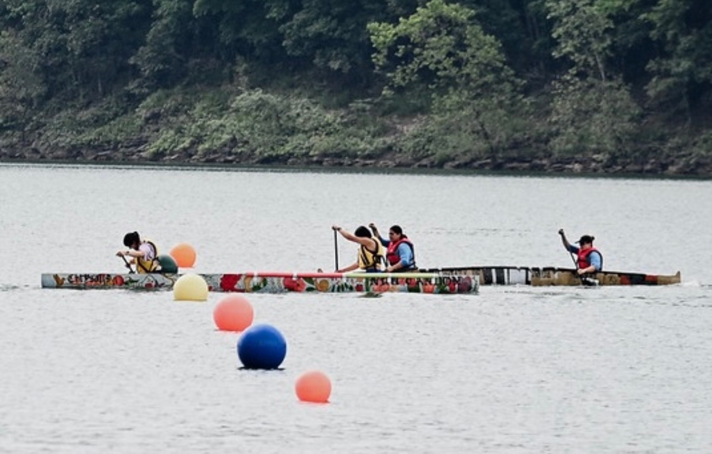
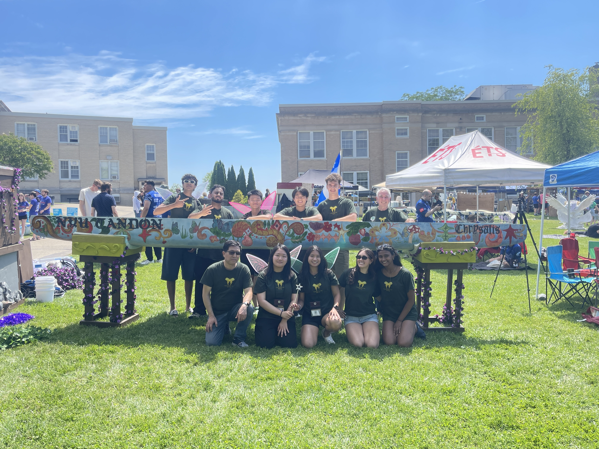

NYU Concrete Canoe
From the
concrete jungle
Since 2008
We make
concrete float
We’re a student team at NYU Tandon. Every year, we research, design, build, and race a concrete canoe at the ASCE Concrete Canoe Competition.
From material science and structural analysis to construction and paddling, we take engineering out of the classroom and onto the water.
Get to know the teamBuilt here, proven on the water
Our competition history- Metropolitan Regional wins
- 8×
- Overall at Nationals 2026
- 3rd
- Technical proposal at Nationals 2026
- 2nd
Built on experimentation
Explore our engineeringA concrete canoe is a materials problem, a structural challenge, and a construction project. Our best ideas connect all three.
Segmented modular mold
A mold built in sections, bringing digital fabrication and construction planning together.
Meshless construction
Rethinking the relationship between the concrete mix, the shell, and reinforcement.
Carbon-negative concrete
Using carbon-sequestering recycled concrete fines to develop a more sustainable mix.

One canoe
Many perspectives
Mix design, structures, construction, graphics, software, and paddling. It takes different interests and skills to bring a canoe to life.
We’re part of NYU Tandon’s Vertically Integrated Projects program, where students work together on a shared engineering challenge.
Meet the whole teamMeet our leadership
Meet the whole teamMeet our leadership on the team page.